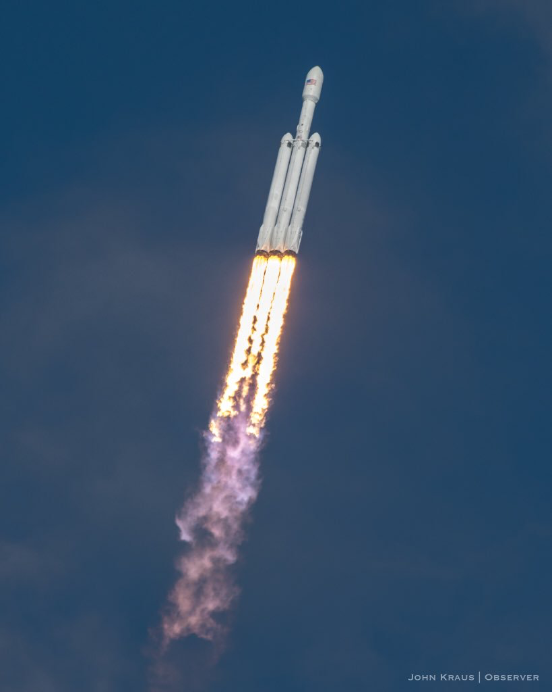

Superciężka rakieta nośna wytwarzana i obsługiwana przez amerykańską firmę SpaceX. Jej pierwszy lot odbył się 6 lutego 2018 roku. Rakieta wykorzystuje 3 pierwsze człony rakiety Falcon 9. W bocznych członach jedyna modyfikacja, to owiewka zamontowana na szczycie, natomiast centralny człon został poważnie zmodyfikowany. 2. stopień pozostał bez żadnych zmian z Falcona 9.
Dzięki temu rozwiązaniu znacznie zwiększyły się osiągi rakiety, które teoretycznie umożliwiają dostarczenie na niską orbitę okołoziemską ładunku o masie do 63,8 t (podczas gdy Falcon 9 w najmocniejszej wersji może teoretycznie wynieść do 22,8 t). Tak duża rakieta umożliwia również ewentualne załogowe wyprawy księżycowe, a także na Marsa, choć loty załogowe są mało prawdopodobne.
Falcon Heavy jest najcięższą z będących obecnie w użytku rakiet nośnych i dopiero budowany przez NASA Space Launch System będzie miał większe możliwości. W historii przewyższały ją jedynie trzy rakiety:
- amerykański Saturn V z księżycowego programu Apollo,
- radziecka rakieta Energia,
- radziecka N1, która jednak nie miała udanych startów.
Testowy start rakiety odbył się z kompleksu startowego nr 39 Centrum Kennedy’ego 6 lutego 2018 roku.
Dane techniczne
Program budowy rakiety Falcon Heavy został ogłoszony publicznie przez Elona Muska – założyciela i dyrektora SpaceX, w kwietniu 2011 r. Zapowiadano wówczas pierwszy start na 2013 r., jednak termin ten wielokrotnie przekładano, co spowodowane było zarówno niezbyt dużym początkowo zainteresowaniem tą rakietą ze strony potencjalnych klientów komercyjnych, jak i skoncentrowaniem się przedsiębiorstwa na doprowadzeniu do odzyskiwania pierwszego stopnia Falcona 9, modernizacji silnika Merlin 1 i na pracach nad załogową wersją statku Dragon 2.
| Parametr |
Falcon Heavy |
| Stopień 0 |
2 stopnie pomocnicze po 9 x Merlin 1D |
| Stopień 1 |
9 x Merlin 1D |
| Stopień 2 |
1 x Merlin 1D Vaccum (lub 1 x Raptor (plan.)) |
| Wysokość (m) |
70 |
| Średnica (m) |
12,2 (szerokość) |
| Ciąg początkowy (kN) |
20 418 |
| Masa startowa (t) |
1420,788 |
| Średnica osłony (m) |
5,2 |
| Ładunek na LEO (t) |
63,8 |
| Ładunek na GTO (t) |
26,7 |
| Ładunek na Marsa (t) |
16,8 |
| Cena |
90mln USD przy ładunku do 8 t na GTO |
| Starty udane/wszystkie |
3/3 |
Ponieważ poszczególne stopnie Falcona Heavy wywodzą się z głównego stopnia Falcona 9, główną rolę także w tej rakiecie odgrywa silnik Merlin 1D, produkowany również przez SpaceX. W związku z tym przy starcie rakiety równocześnie pracuje 27 takich silników rozmieszczonych w trzech segmentach (stopniach) umieszczonych obok siebie, każdy po 9 silników. Merlin 1D to silnik jednokomorowy, napędzany mieszaniną ciekłego tlenu i kerozyny (RP-1). Przewidziany jest do wielokrotnego wykorzystania.
Pierwszy test statyczny silników odbył się 24 stycznia 2018.
Falcon Heavy będzie mógł startować z kosmodromu użytkowanego przez SpaceX z wyrzutni LC-39A w Centrum Kosmicznym im. J.F. Kennedy’ego na przylądku Canaveral na Florydzie.
Planowanym polem zastosowania rakiety Falcon Heavy są loty bezzałogowe. SpaceX rozpoczęło ponadto proces certyfikacji rakiety na potrzeby Sił Powietrznych Stanów Zjednoczonych (USAF)[8], co zapewni przedsiębiorstwu dostęp do rynku usług dla wojska. Ponieważ Falcon Heavy jest bezpośrednim rozwinięciem rakiety Falcon 9, która otrzymała taki certyfikat, proces ten powinien być znacznie krótszy niż 2 lata potrzebne do certyfikacji Falcona 9.
Na początku 2018 roku wycofano się z pomysłów na loty załogowe poza orbitę Księżyca i powrót do nich jest mało prawdopodobny[3].
Odzyskiwanie pierwszego stopnia rakiety jest uzależnione od rodzaju misji, ponieważ wymaga zabrania dodatkowej ilości paliwa.
Pierwszy start planowany był na 6 lutego 2018 i odbył się pomyślnie dla ładunku (Tesla Roadster z manekinem w skafandrze kosmicznym w fotelu kierowcy), lecz centralny człon nie zdołał wylądować na barce z powodu wyczerpania się mieszanki TEA-TEB przeznaczonej do rozruchu silników. W konsekwencji zamiast uruchomić 3 silniki, został uruchomiony tylko 1 i rakieta z prędkością ok. 500 km/h uległa zniszczeniu o taflę Atlantyku kilka metrów od barki. Dwa pozostałe boczne człony wylądowały pomyślnie na platformach LZ-1 i LZ-2 praktycznie w tym samym czasie.

Falcon Heavy podczas lotu (Źródło: John Kraus)
Źródło: wikipedia.org